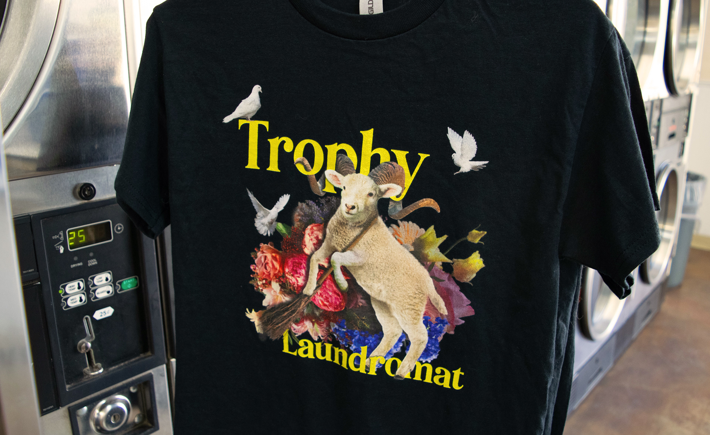
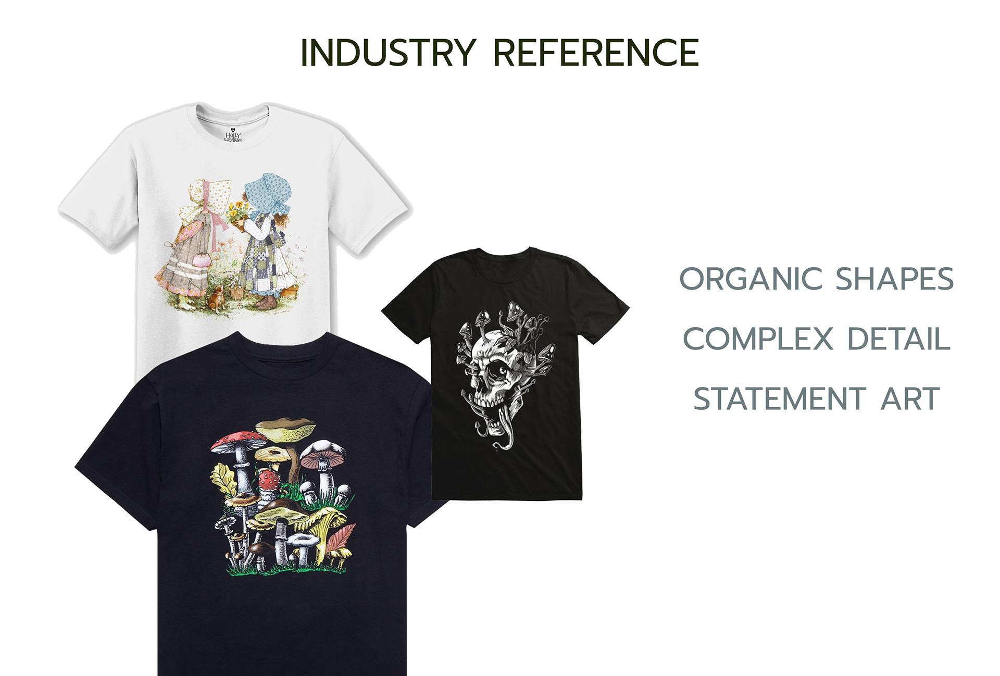
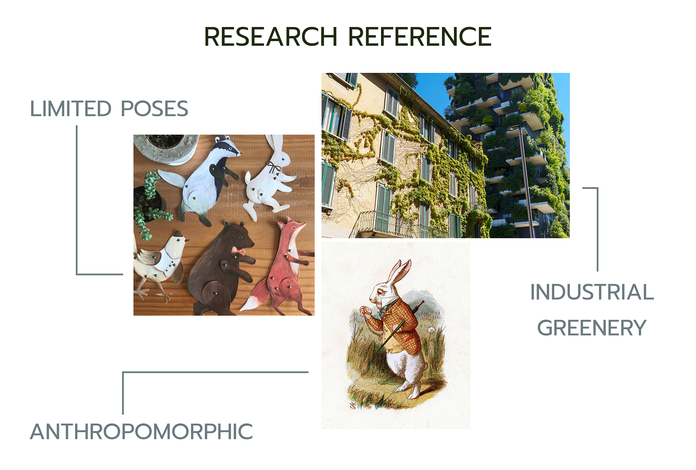
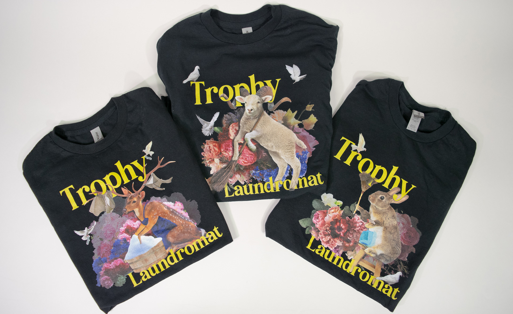
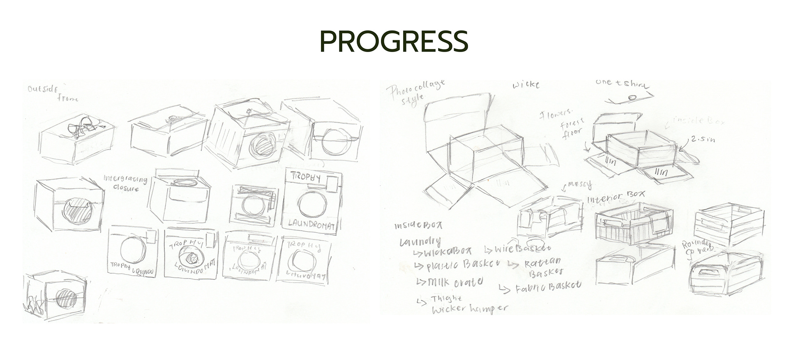
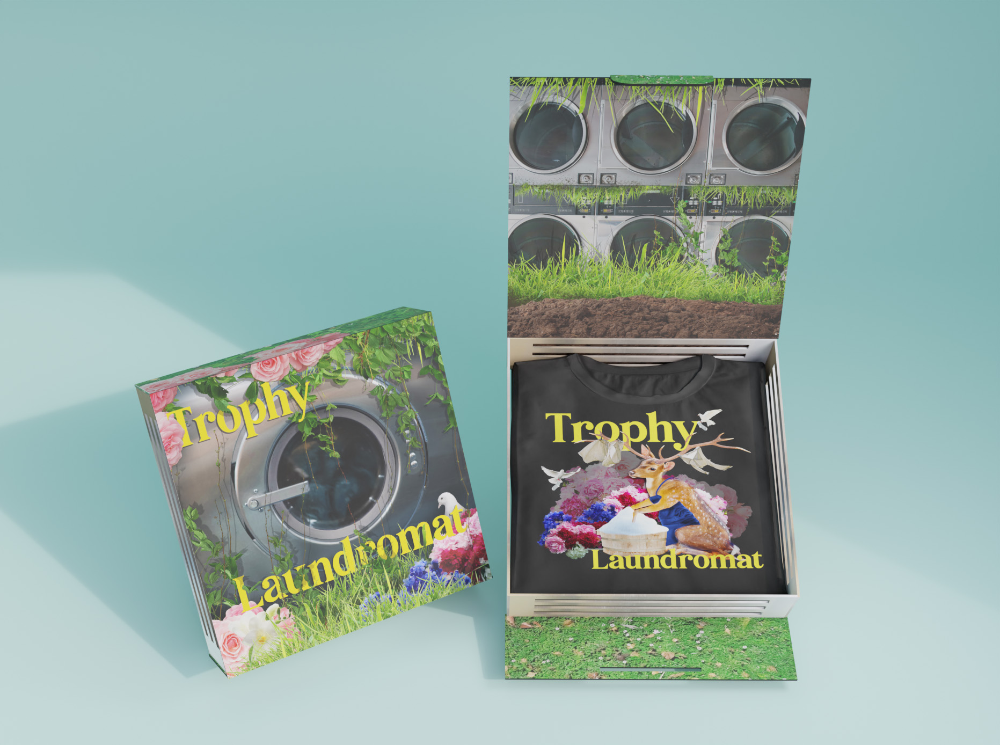

Trophy Laundromat
Trophy Laundromat is a clothing brand that combines the mundane task of cleaning with common animals to create unusual and fantastical visuals.
Tools:Photoshop, Lightroom, Photography, Illustrator
Skills: User Experience Research, Illustration, Photo Editing, Package Design
Like the jointed paper doll, the chosen technique is collaging different parts of the animal to achieve bizarre poses. It was vital for me to design in an organic shape to match the body of a human, rather than framing the image in constricted geometry.
back to all works





